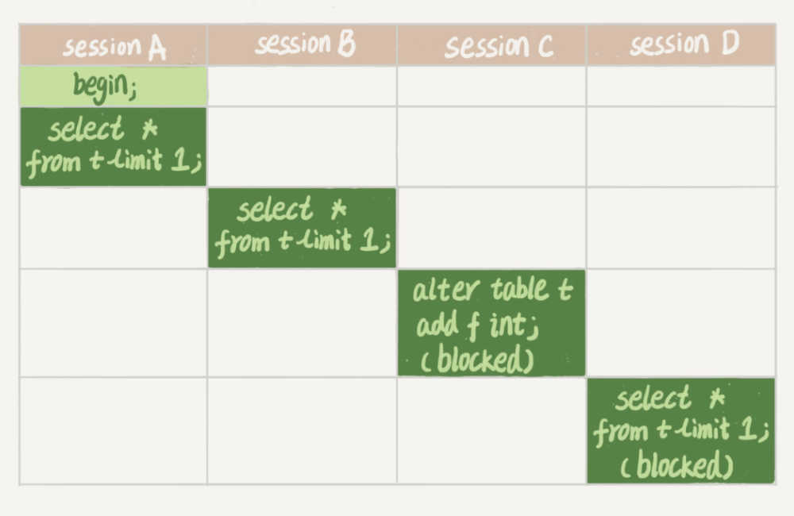

先导概念：
- 读锁：可以并发读，如果有写操作，则必须等读锁释放
- 写锁：不能并发读，也不能并发写，都必须等写锁释放才能继续
全局锁
使用FLUSH TABLES WITH READ LOCK会让你给整个数据库加一个读锁。这会阻塞所有DML、DDL、更新类事务的commit，直到被释放。
全局锁的典型使用场景是，做全库逻辑备份。
怎么释放？TODO
表级锁
表锁
通过下面语句给表加上读锁或写锁，还有释放：
-- 加锁
lock tables ... read/write
-- 释放
unlock tables
-- 例如
lock tables t1 read, t2 writeMySQL的锁不是可重入的，即加锁之后，当前连接/session也受制于这个锁。
如果加的是读锁：
- 本session：可以读，不可写（直接报错）
- 其他session：可以读，阻塞写
如果加的是写锁：
- 本session：可以读、可以写
- 其他session：阻塞读、阻塞写
元数据锁（Metadata Lock，MDL）
访问表的时候会被自动加上（隐式）：
- 在CRUD一个表的时候，加上MDL读锁
- 对表结构变更的时候，加上MDL写锁
陷阱：MDL锁在语句开始时申请，但是要在事务提交之后才会释放。所以下面语句会导致很多数据库操作被阻塞：

- session A开启事务，查询，得到MDL读锁
- session B查询，得到MDL读锁
- session C加字段，要得到MDL写锁，阻塞
- session D查询，要得到MDL读锁，阻塞
因为session A没有提交事务，所以就造成了后续一连串的阻塞。如果某个表上的查询语句频繁，而且客户端有重试机制，也就是说超时后会再起一个新 session 再请求的话，这个库的线程很快就会爆满。
解决办法：
问题的本质在于一个MDL写锁在等待MDL读锁的释放，而读锁却在一个长事务里，导致后续的MDL读锁堆积。
所以可以在执行DDL之前看有没有长事务在跑，如果有，Kill掉这个长事务，或者等待长事务结束在DDL。
还可以给DDL添加超时时间，如果等待超时则放弃，然后人工再重试（MariaDB和AliSQL支持下面语法）：
ALTER TABLE tbl_name NOWAIT add column ...
ALTER TABLE tbl_name WAIT N add column ... 行锁
数据库备份
可以使用FLUSH TABLES WITH READ LOCK把数据库整个锁了来备份，目的是得到一致性视图。MyISAM引擎不支持MVCC，所以可以用这个方法。
mysqldump --single-transaction则能利用InnoDB的MVCC机制来得到一个一致性视图。--single-transaction方法只适用于所有的表使用事务引擎的库（InnoDB）。